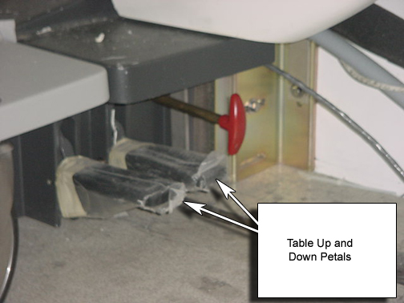

Operating Documentation
Direction 5440000, Rev# 5
Signa HDxt Service Methods
Module Version 1.0, Version Date 5/15/07
Operating Documentation |
Check that the table goes down in 20 seconds or less from the dock down pedal.
Press the dock “Down” Petal. See Illustration 1. Check that the table goes down in 20 seconds or less. If it doesn’t go down in 20 seconds, we may need to examine the Hydraulic fluid filter and hoses.
Press the doc “Up” petal. See Illustration 1. Verify that the table (Unloaded) reaches max height in 19 seconds or less. If adjustments are needed, see Dock Motor Speed Adjustment.
Illustration 1: Dock Pedals
